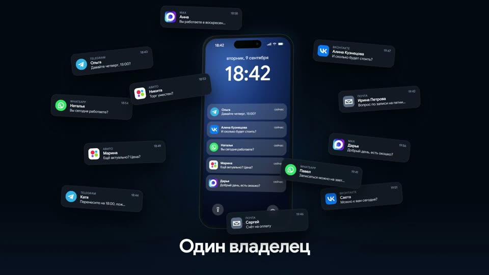
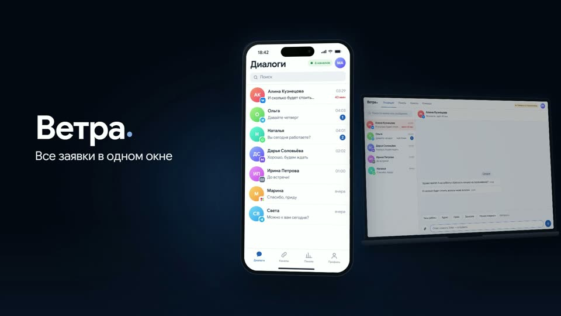
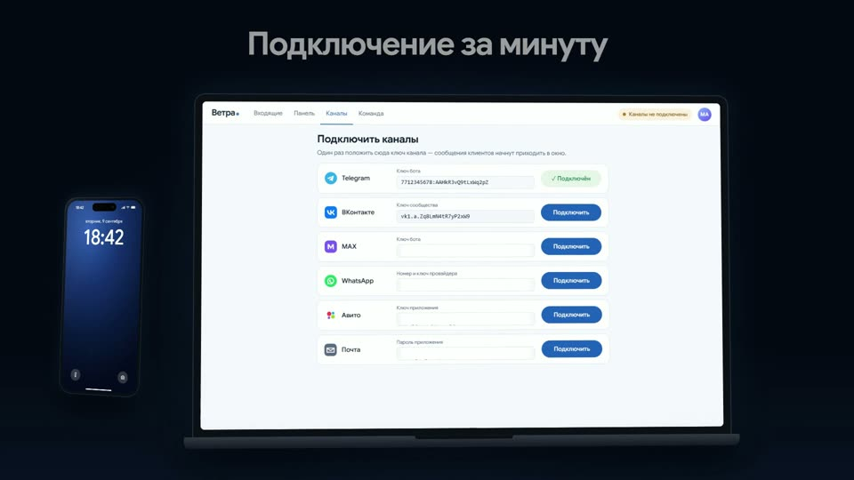
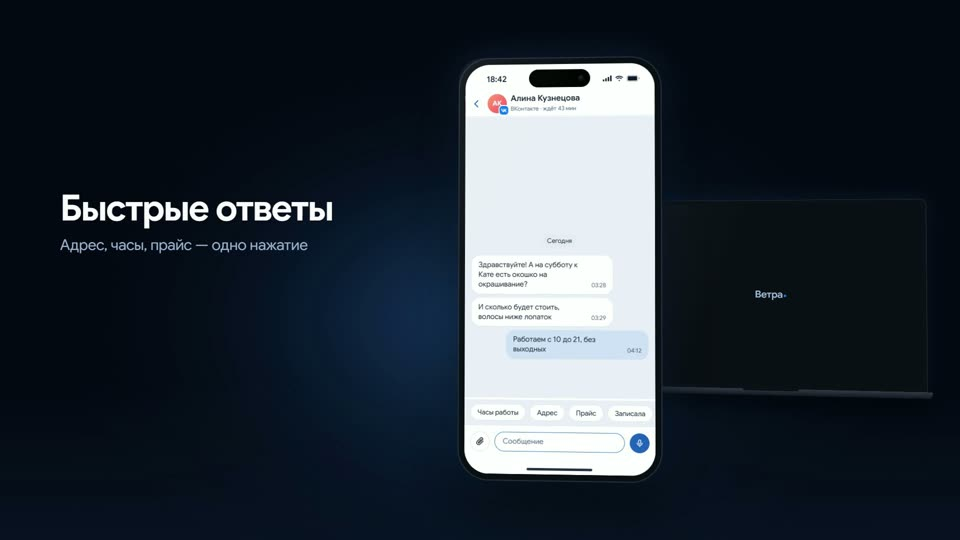
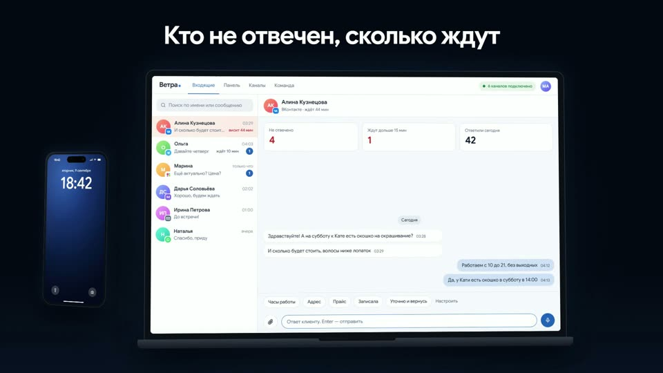
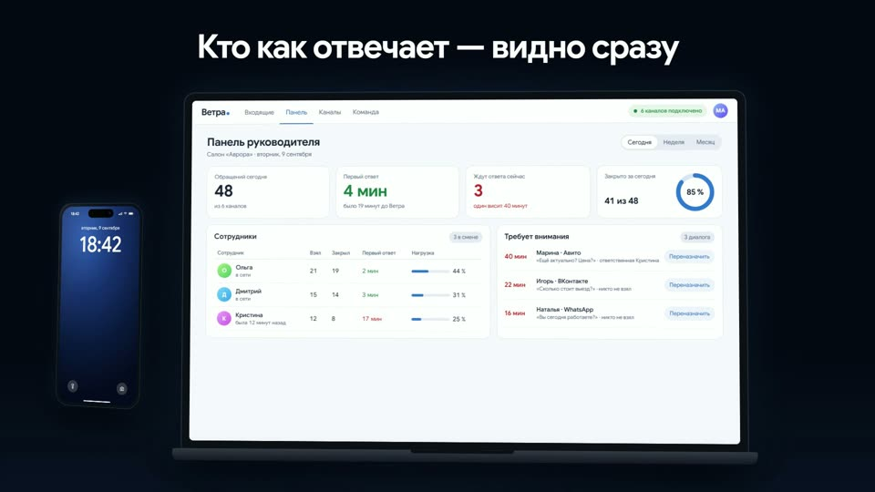
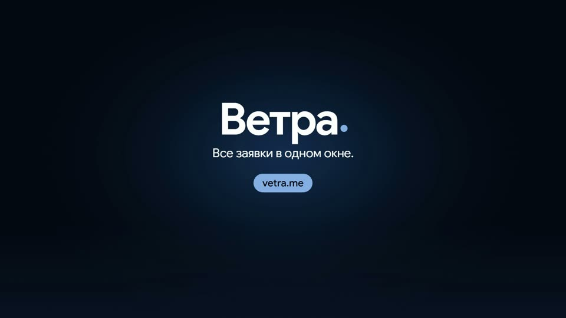
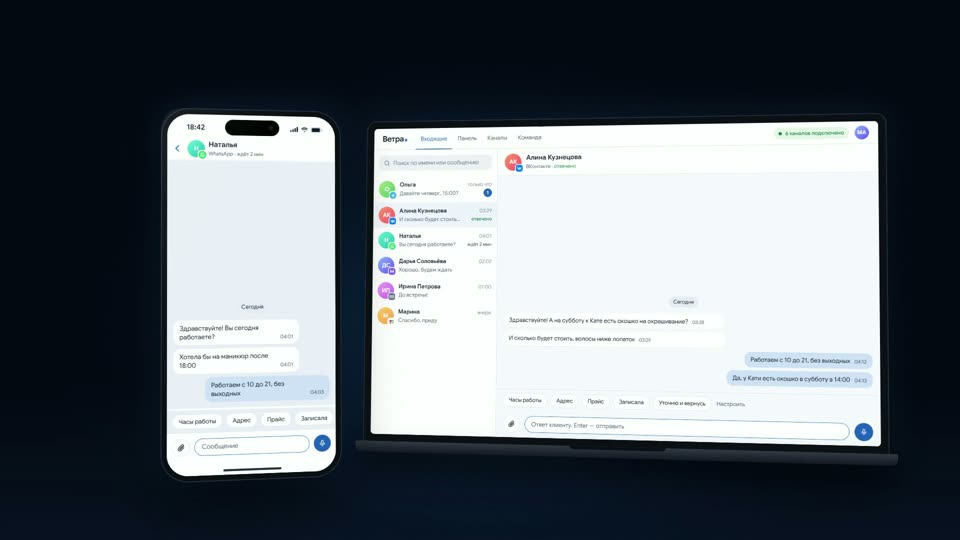

Ролик Ветры — разбор по сценам
Версия 4 от 9 сентября, 54 секунды: музыка Gemini «Midday Momentum» целиком. Ниже — вариант с зацикленным началом. Нажми на кадр или «смотреть с …» — видео перемотается на начало сцены. Правки диктуй так: «сцена 3 — …».
Тот же ролик с петлёй первых 12 секунд трека вместо целого:
И третий — с треком Gemini «Glass and Gravity» (пятая попытка, по промпту «как первые 12 секунд»):
- Ролик короче почти на полминуты: 54 с вместо 78. Уведомления в хаосе прилетают за 2,5 с, подключение шести каналов — за 6 с, камера ездит быстрее.
- Звук уведомлений — присланный iPhone-динь, на каждую карточку.
- Телефон — iPhone 15 Pro: островок, статус-бар со временем и батареей, полоска «домой». Приложение перерисовано как настоящее: экран «Диалоги» с крупным заголовком, поиском и нижними вкладками, градиентные аватары с инициалами, значок канала на аватаре.
- Экран блокировки вместо чёрного экрана: обои, дата и время, стопка уведомлений.
- Значки каналов — как на лендинге: Telegram, ВКонтакте, MAX, WhatsApp, Авито, Почта. Ozon убран, WhatsApp добавлен везде.
- Новая сцена «Панель руководителя»: обращения за день, время первого ответа, кто ждёт, сотрудники с нагрузкой, «Требует внимания» и переназначение в клик.
- Финал: свечение без колец — плавный градиент из девяти ступеней плюс зерно; финальный файл сжат мягче.

Хаос
iPhone с экраном блокировки. За 2,5 секунды прилетают 12 уведомлений из шести приложений и на экран ложится стопка баннеров. На каждое — динь.
- 0,6 сШесть приложений
- 2,6 сОдин владелец
- 4,2 сКлиент ждёт 43 минуты

Имя
Карточки втягиваются в телефон, экран загорается «Диалогами» Ветры. Из-за телефона выезжает ноутбук.
- 6,3 сВетра·
- 6,8 сВсе заявки в одном окне

Подключение
Ключ Telegram набирается за 0,8 с, дальше ВКонтакте, MAX, WhatsApp, Авито, Почта — по 0,6 с на канал. Шапка: «6 каналов подключено».
- 9,6 сПодключение за минуту
- 12,2 сВставил ключ — канал горит
- 14,7 сШесть каналов. Одно окно.

Телефон
Список → диалог Алины → заготовка «Часы работы» → диктовка «Да, у Кати есть окошко в субботу в 14:00» → отправка → «отвечено» → назад к списку.
- 16,3 сОдно окно на телефоне
- 18,7 сБыстрые ответы
- 21,0 сДиктовка голосом
- 24,1 сОтвечаешь одной рукой

ПК
То же окно на ноутбуке, плитки «Не отвечено · Ждут дольше 15 мин · Ответили сегодня». Приходит Марина с Авито, Алина переходит в «отвечено».
- 27,8 сТо же окно на ПК
- 30,5 сКто не отвечен, сколько ждут

Панель руководителя
Вкладка «Панель»: 48 обращений, первый ответ 4 мин вместо 19, трое ждут, закрыто 85 %. Таблица сотрудников с нагрузкой. «Требует внимания» — курсор жмёт «Переназначить», диалог уходит, 3 → 2.
- 35,6 сПанель руководителя
- 38,5 сКто как отвечает — видно сразу
- 41,3 сПереназначил в два клика

Финал
Устройства уходят в темноту, имя, слоган, адрес. Свечение теперь без колец.
- 45,2 сВетра·
- 46,0 сВсе заявки в одном окне.
- 47,4 сvetra.me

Фон в hero лендинга
Тот же новый интерфейс: телефон с диалогом Натальи из WhatsApp, ноутбук со списком. Въезжает диалог Ольги, на телефоне нажата заготовка. Цикл бесшовный.
▶ открыть hero-циклМузыка — выбери вариант
Все три собраны кодом, без чужих треков. В ролике на лендинге — «Midday Momentum» целиком (обрезан до 54 с). Второй ролик ниже — с петлёй из первых 12 с. Хочешь настоящий трек из каталога — см. записку внизу.
- Музыка: выбрать из трёх роликов — «Midday Momentum» целиком, петля из его первых 12 с, «Glass and Gravity». Победитель едет на лендинг.
- Иконка MAX — официальная, стоит с версии 3 (на лендинге пока старая «M», скажи, если менять и там).
- Шрифт титров: ролик пока на Google Sans, лендинг — на Unbounded + Onest. Переводить ролик на шрифты лендинга?